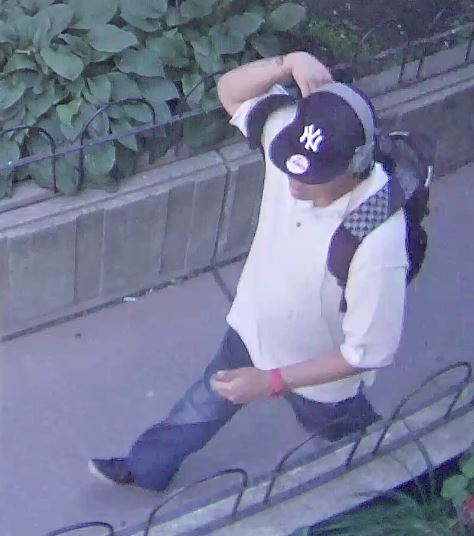

Incident Details:
On Tuesday 19 August, 2014 Ryerson University Security & Emergency Services were made aware of the following incident:
At approximately 03:30 PM a female staff member was walking past the 380 Victoria Street lobby women’s washroom. The staff member noticed the subject, who was walking in the opposite direction, heading towards the washroom and pointed out that the washroom was a women’s washroom. The subject turned around to face the staff member and while backing into the washroom using his back to open the door gestured for the staff member to follow him in.
The staff member left the area and informed another staff member of the subject being inside the women’s’ washroom. The other staff member instructed the man to leave the washroom. The subject was last seen heading towards Gerrard Street, via the 380 Victoria Street entrance.
Ryerson University Security & Emergency Services searched the area for the subject, but he was not located.
If you have any information about this incident or have been the victim of a similar incident, please call Ryerson University Security & Emergency Services at 416-979-5040 or via email at security@ryerson.ca. For any incidents in progress use the Emergency "80" number from internal phones. Ryerson University Security & Emergency Services offers 24 hour Walk Safe escorts and free self-defense courses; please check our website for more information at http://www.ryerson.ca/irm/security/index.html.
Resources on Campus
Suspect information:
Male
Medium Complexion
5’ 10” / 1m 78 cm tall
Medium build
Approximately 20-25 years of age
Tattoos on both his arms – with one on his right forearm
Wearing a black “New York Yankees” baseball hat, grey headphones, white long t-shirt, blue jeans, black shoes and a red wrist watch
Carrying a black and grey checkered backpack
Overall neat appearance

Notification Information:
If you are a witness to a crime, please call Ryerson Security at 416-979-5040, or Toronto Police Services through Crime Stoppers at 416-222-TIPS (8477).
For Emergencies dial "80" (internal phones only).
To see all Security Incidents, please visit our web site at www.ryerson.ca/security.
AA-27-14